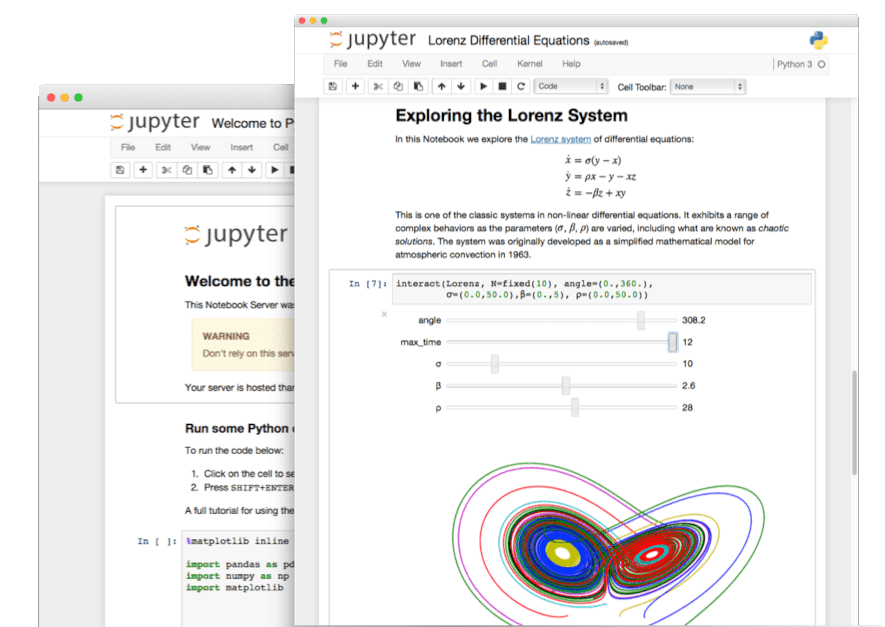

The Jupyter Notebook
The Jupyter Notebook is an open-source web application that allows you to create and share documents that contain live code, equations, visualizations and narrative text. Uses include: data cleaning and transformation, numerical simulation, statistical modeling, data visualization, machine learning, and much more.
Language of choice
Jupyter supports over 40 programming languages, including Python, R, Julia, and Scala.
Share notebooks
Notebooks can be shared with others using email, Dropbox, GitHub and the Jupyter Notebook Viewer.

Interactive output
Your code can produce rich, interactive output: HTML, images, videos, LaTeX, and custom MIME types.

Big data integration
Leverage big data tools, such as Apache Spark, from Python, R and Scala. Explore that same data with pandas, scikit-learn, ggplot2, TensorFlow.